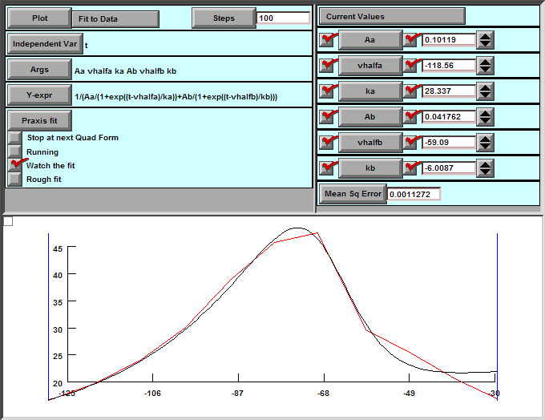
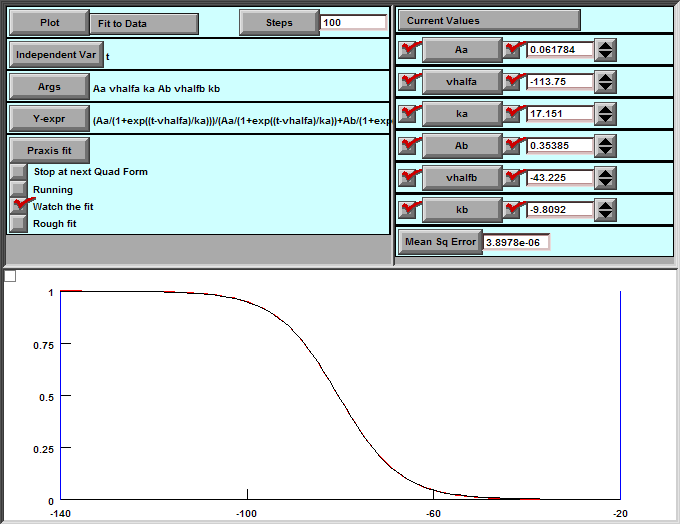

: Ih based on Magee JC (1998), The Journal of Neuroscience
: Modified by Payne Y. Chang
: Temporature fixed at 33 degC
: External [Na+] = 10 ~ 60 mM
: Reversal potential = -30 mV
TITLE I-h channel from Magee 1998
NEURON { : Interface definition. Not a variable declaration block.
SUFFIX h : Density mechanism
NONSPECIFIC_CURRENT i
RANGE gbar : Location dependent variables
}
UNITS {
(mA) = (milliamp)
(mV) = (millivolt)
}
PARAMETER { : Global variable by defauls
gbar = 0.0001 (mho/cm2)
eh = -30 (mV)
:==============================
: l
vhalfl = -80.5 (mV)
kl = 6.7 (mV)
:==============================
: tau
:==============================
: Alpha for tau
Aa = 0.08
vhalfa = -107 (mV)
ka = 21 (mV)
:==============================
: Beta for tau
Ab = 0.06
vhalfb = -54 (mV)
kb = -10 (mV)
}
ASSIGNED { : Range variable by default. Not visible in hoc
v (mV)
i (mA/cm2)
linf
taul
gh
}
STATE {
l
}
INITIAL {
rate(v)
l = linf
}
BREAKPOINT {
SOLVE states METHOD cnexp
gh = gbar * l
i = gh * (v - eh)
}
FUNCTION alpha(v(mV)) {
alpha = Aa/(1 + exp((v - vhalfa)/ka))
}
FUNCTION beta(v(mV)) {
beta = Ab/(1 + exp((v - vhalfb)/kb))
}
DERIVATIVE states {
rate(v)
l' = (linf - l)/taul
}
PROCEDURE rate(v (mV)) {
linf = 1/(1 + exp((v-vhalfl)/kl))
taul = 1/(alpha(v)+beta(v))
}
Fit Tau

Fig GV Curve
